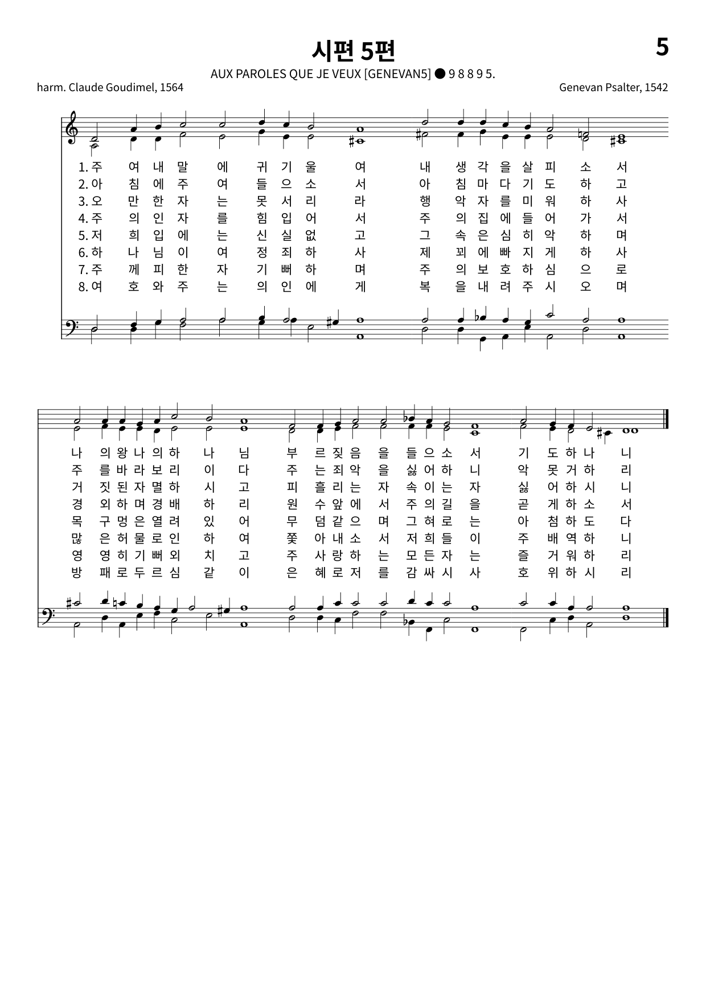

시편 5편
AUX PAROLES QUE JE VEUX [GENEVAN5] · 9 8 8 9 5.
곡조: Genevan Psalter, 1542 · 화성: Claude Goudimel, 1564 · 가사: 개역한글판 시편 5편 편역(AI 초벌 편역판 · 신학 감수 전) · 8절
악보 PDF MusicXML(출력용) MusicXML(반주용, 전주·반복 포함) 개역한글 시편 5편 읽기

가사
1절
주여 내 말에 귀 기울여
내 생각을 살피소서
나의 왕 나의 하나님
부르짖음을 들으소서
기도하나니
주여 내 말에 귀 기울여
내 생각을 살피소서
나의 왕 나의 하나님
부르짖음을 들으소서
기도하나니
2절
아침에 주여 들으소서
아침마다 기도하고
주를 바라보리이다
주는 죄악을 싫어하니
악 못 거하리
아침에 주여 들으소서
아침마다 기도하고
주를 바라보리이다
주는 죄악을 싫어하니
악 못 거하리
3절
오만한 자는 못 서리라
행악자를 미워하사
거짓된 자 멸하시고
피 흘리는 자 속이는 자
싫어하시니
오만한 자는 못 서리라
행악자를 미워하사
거짓된 자 멸하시고
피 흘리는 자 속이는 자
싫어하시니
4절
주의 인자를 힘입어서
주의 집에 들어가서
경외하며 경배하리
원수 앞에서 주의 길을
곧게 하소서
주의 인자를 힘입어서
주의 집에 들어가서
경외하며 경배하리
원수 앞에서 주의 길을
곧게 하소서
5절
저희 입에는 신실 없고
그 속은 심히 악하며
목구멍은 열려 있어
무덤 같으며 그 혀로는
아첨하도다
저희 입에는 신실 없고
그 속은 심히 악하며
목구멍은 열려 있어
무덤 같으며 그 혀로는
아첨하도다
6절
하나님이여 정죄하사
제 꾀에 빠지게 하사
많은 허물로 인하여
쫓아내소서 저희들이
주 배역하니
하나님이여 정죄하사
제 꾀에 빠지게 하사
많은 허물로 인하여
쫓아내소서 저희들이
주 배역하니
7절
주께 피한 자 기뻐하며
주의 보호하심으로
영영히 기뻐 외치고
주 사랑하는 모든 자는
즐거워하리
주께 피한 자 기뻐하며
주의 보호하심으로
영영히 기뻐 외치고
주 사랑하는 모든 자는
즐거워하리
8절
여호와 주는 의인에게
복을 내려 주시오며
방패로 두르심 같이
은혜로 저를 감싸시사
호위하시리
여호와 주는 의인에게
복을 내려 주시오며
방패로 두르심 같이
은혜로 저를 감싸시사
호위하시리